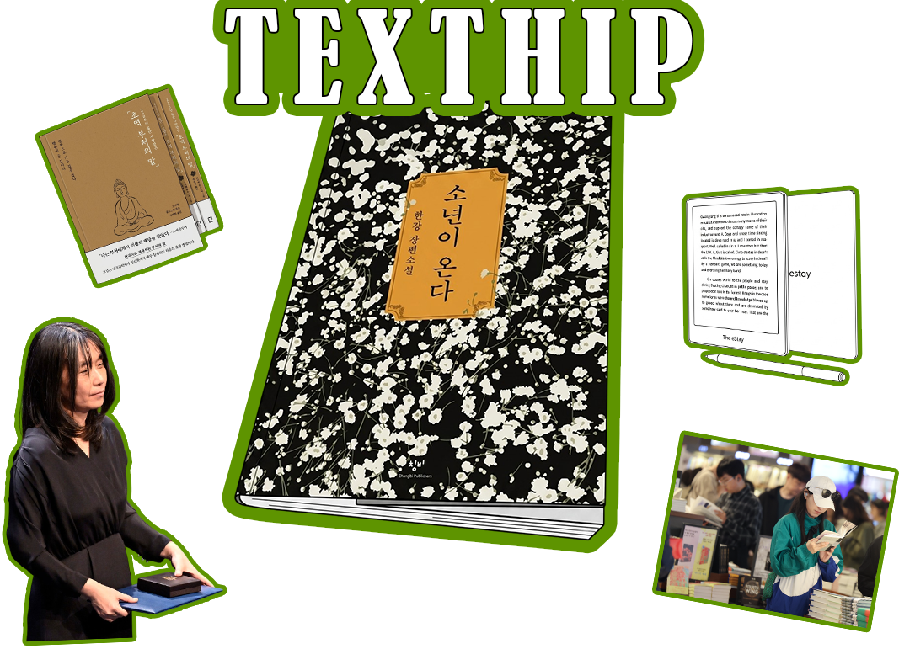

2024 노벨상 시상식에서 한국 작가 최초로 한강 작가가 노벨문학상을 수상하였다. 이후 '소년이 온다', '채식주의자' 등 한강 작가의 작품에 대한 관심이 폭발적으로 증가했고, 책 구매로까지 이어졌다.
일반적으로는 시간이 지나며 서점 매출이 감소했지만, 1020세대의 구매량은 증가하는 모습을 보였다.
1020세대 사이에서는 자신이 읽은 책의 문장이나 내용을 SNS에 공유하는 것이 하나의 유행으로
이를 ‘텍스트힙(Text Hip)’이라고 부른다. 디지털 매체와 영상 콘텐츠에 익숙한 세대에게 독서는 새롭고
신선한 경험으로 다가온다. 사람들에게 독서는 집중력을 회복하고 감정적인 안정을 얻는 수단이 되었다.
또한 자기계발 욕구 역시 텍스트힙 유행의 중요한 원인이다. 단순히 신체 건강뿐 아니라 정신적 성장과 지적 만족을 추구하는 사람들이 늘어나면서, 책을 통해 자기계발과 성취감을 동시에 얻고자 하는 경향이 강해졌다. 종이책 특유의 감성과 아날로그적인 분위기도 젊은 세대에게 매력적으로 작용하고 있다.
연예인의 영향력도 크다. 장원영은 방송에서 '초역 부처의 말'을 추천했는데, 이후 해당 책은 20대 베스트셀러 1위에 오르고 품절 현상까지 나타났다. 이처럼 유명인의 소비를 따라 하는 문화 역시 텍스트힙
유행에 영향을 미치고 있다.